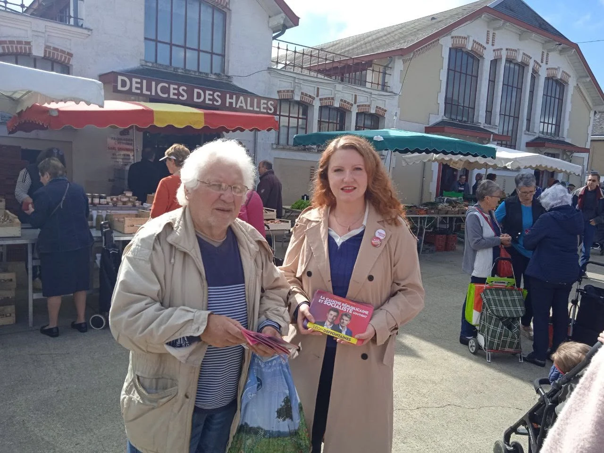

Compte rendu relayé
La campagne européenne sur les marchés de Thouars et Bressuire
Date de mise à jour indiquée par Facebook · 27 mai 2024
Repères éditoriaux
À Thouars puis à Bressuire, nous avons relayé le passage des camarades sur les marchés pour faire connaître la liste de la Gauche unie.
Texte de la publication · Élisabeth Jutel
#Européennes2024
Hier sur le très beau marché de Thouars, ce matin sur celui de Bressuire : tous sur le pont pour Léon Deffontaines et la #GaucheUnie pour le monde du #travail.
La Gauche Républicaine & Socialiste aux côtés des amis du PCF 79 - Parti Communiste Français fédération des Deux-Sèvres.
#pouvoirdachat #factures #energie #servicespublics
https://www.deffontaines2024.fr/

Sources
Élisabeth Jutel · publication relayée par le PCF 79 · bibliothèque Facebook · AR-0002-FB-01378
À lire aussi · Européennes. Distribution de tracts chez Heuliez Bus